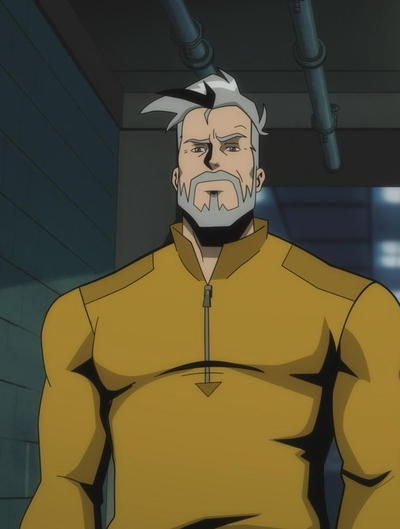
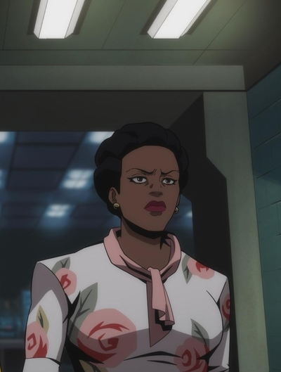
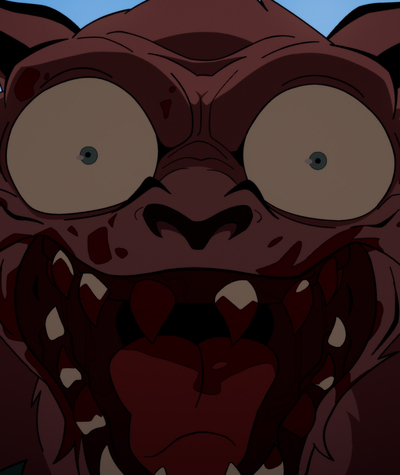

電影
電影宇宙時間軸
從《Superman》到《Man of Tomorrow》，按上映順序整理 DCU 電影的劇情與觀影建議。
角色首次登場
每位英雄與反派的電影初登場紀錄。
評分與心得
個人觀影評分與短評彙整。
影集
HBO / Max 影集
《Creature Commandos》、《Peacemaker》等 DCU 正史影集追蹤。
角色首次登場
DCU 角色常跨足動畫與真人兩種形式，且多由同一位演員身兼配音與真人演出。頭像右下角徽章標示該角色的配音 / 真人演員。


Rick Flag Sr.
Frank Grillo 配音 / 真人演出
首次登場：Creature Commandos（2024，動畫）→ 真人版於《Peacemaker》第二季登場


Amanda Waller
Viola Davis 配音 / 真人演出
首次登場：Creature Commandos（2024，動畫）；同一演員亦於《Peacemaker》第二季真人演出


Weasel
Sean Gunn 配音 / 真人演出
首次登場：《自殺突擊隊》（2021，真人）→ 配音回歸《Creature Commandos》（2024，動畫）

John Economos
Steve Agee 配音 / 真人演出
官方單人動畫劇照尚未尋獲，待補。首次登場：《和平使者》第一季（2022，真人）
動畫角色劇照來源：Warner Bros. Discovery Pressroom 官方新聞資料庫；演員頭像來源：TMDB。
時間軸
DC Studios「第一章：諸神與怪物」(Chapter One: Gods and Monsters) 依上映順序整理，由 Creature Commandos 揭開序幕。
-
 2024.12.05 影集 已上映
2024.12.05 影集 已上映Creature Commandos 第一季
由伍勒博士召集的重刑監獄怪物特遣隊，DCU 開幕作，同時是一部限制級成人動畫影集。
-
 2025.07.11 電影 已上映
2025.07.11 電影 已上映Superman
DCU 真人電影正式起點，克拉克・肯特在調和氪星血統與人類成長背景間，重新定義超人。
-
 2025.08.21 影集 已上映
2025.08.21 影集 已上映Peacemaker 第二季
正式並入 DCU 正史的續集季，和平使者面對跨維度的自己與 A.R.G.U.S. 新局長瑞克・弗萊格。
-
 2026.06.26 電影 已上映
2026.06.26 電影 已上映Supergirl
改編自《Supergirl: Woman of Tomorrow》漫畫，Kara Zor-El 首部真人電影，與夥伴踏上復仇的星際旅程。
-
 2026.08.16 影集 即將上映
2026.08.16 影集 即將上映Lanterns 第一季
菜鳥約翰・史都華與資深綠燈俠哈爾・喬丹調查一樁美國中西部的命案，揭開綠燈軍團背後的黑暗秘密。
-
 2026.10.23 電影 後期製作
2026.10.23 電影 後期製作Clayface
以恐怖片手法詮釋的反派起源故事，一位過氣演員在復仇之路上逐漸失去人性。
-
 2027.07.09 電影 製作中
2027.07.09 電影 製作中Man of Tomorrow
《Superman》續集，克拉克與雷克斯・魯瑟聯手對抗更龐大的威脅。
開發中 / 狀態不明
- Waller（影集）— 開發中，因罷工延宕，官方稱「仍在進行」
- Paradise Lost（影集）— 極早期開發
- Booster Gold（影集）— 已定序，籌備中
- The Brave and the Bold（電影，布魯斯・韋恩 / 蝙蝠俠）— 早期開發，編劇更換中
- Swamp Thing（電影）— 近期無更新，狀態不明
- The Authority（電影）— 2026 年 4 月由 James Gunn 宣布暫停開發
※《The Batman：Part II》等 Matt Reeves 蝙蝠俠系列與 Joker 系列屬於 DC Elseworlds，不在 DCU 正史「第一章」之內。
海報圖片來源：TMDB（The Movie Database），本站未經 TMDB 認證或背書。